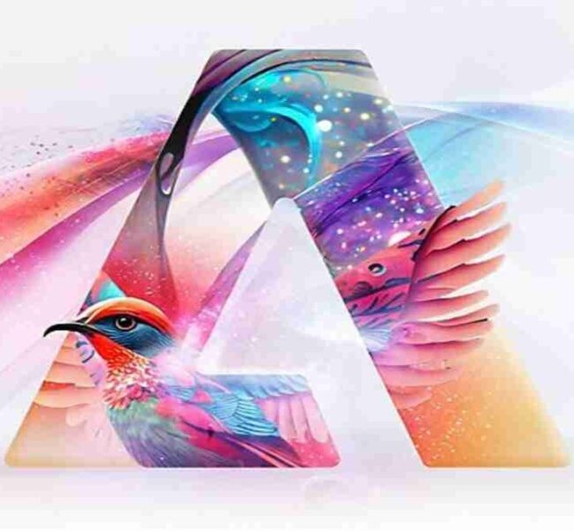
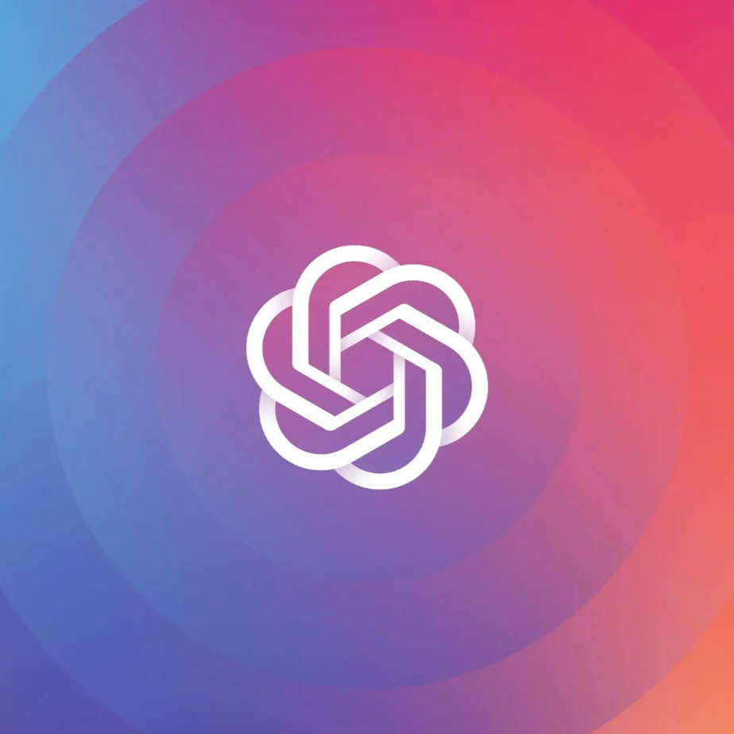

Featured Tools
-

Adobe Firefly
Generative AI for Creators
-

OpenAI Point-E
Produce 3D models and images in seconds
-
Vidon
The simplest way to make videos
Other AI Tools for Productivity
| Stable Diffusion | Craiyon | BeatBot | 2Short |
| SoundDraw | DALLE-2 | Lumen5 | Riverside |